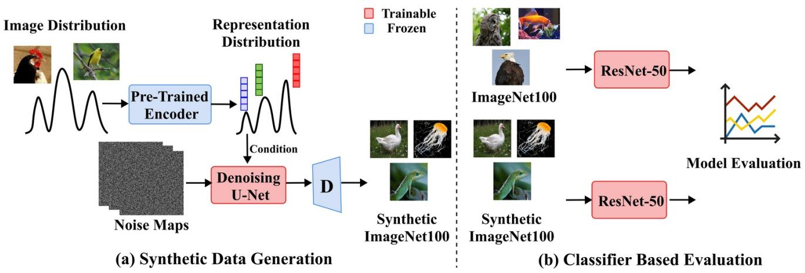
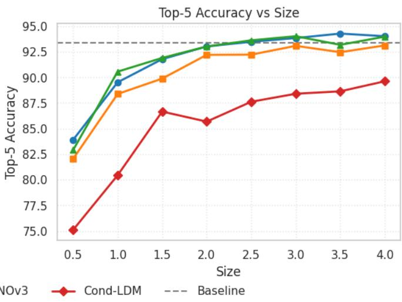

arXiv cross-list · P0 · 2026-05-29
Representation-Conditioned Diffusion Models for Guided：DINO/CLIP 表征如果能指导数据生成，就说明通用视觉表征不仅可迁移，还能参与构建下一轮训练数据闭环
把 foundation representation 从“下游特征”变成“生成数据的控制空间”，并展示 representation-conditioned generation 比 class-conditioned generation 更能覆盖模式。
编号2605.27495
优先级P0
类别arXiv cross-list
会议arXiv cross-list
方法用 DINOv2、DINOv3、CLIP 学到的图像表征作为 latent diffusion 的条件，生成可用于分类训练和增强的合成图像数据。
来源arXiv / OpenReview
先说结论。DINO/CLIP 表征如果能指导数据生成，就说明通用视觉表征不仅可迁移，还能参与构建下一轮训练数据闭环。 把 foundation representation 从“下游特征”变成“生成数据的控制空间”，并展示 representation-conditioned generation 比 class-conditioned generation 更能覆盖模式。


核心问题
DINO/CLIP 表征如果能指导数据生成，就说明通用视觉表征不仅可迁移，还能参与构建下一轮训练数据闭环。
方法拆解
用 DINOv2、DINOv3、CLIP 学到的图像表征作为 latent diffusion 的条件，生成可用于分类训练和增强的合成图像数据。
主要贡献
把 foundation representation 从“下游特征”变成“生成数据的控制空间”，并展示 representation-conditioned generation 比 class-conditioned generation 更能覆盖模式。
实验看点
摘要称在 ImageNet100 上相对 class-conditioned generation 提升 +10.76 个百分点 top-1；扩大合成数据规模后可超过仅用真实数据训练的分类器 +2.0 个百分点。
局限与读法
主要评估是分类训练数据生成；对检测、分割、长尾和开放词汇任务是否同样有效仍需验证。